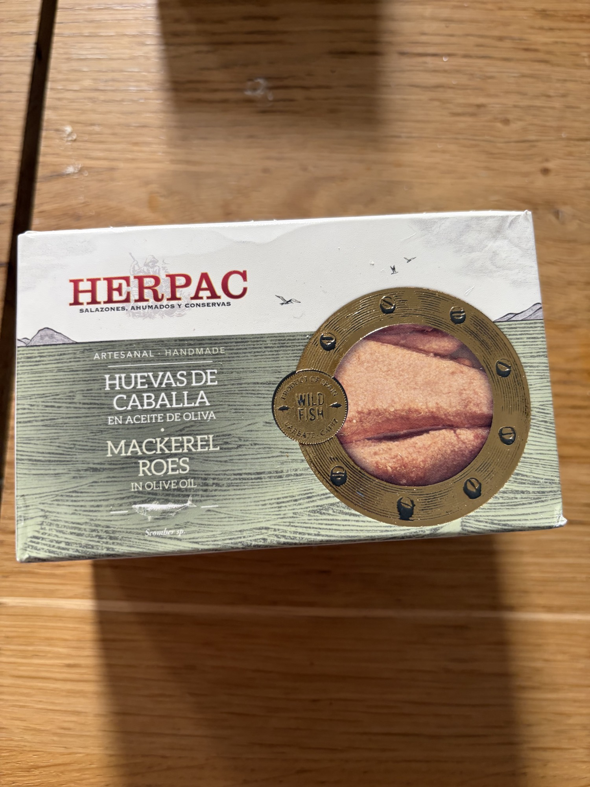

Pork Liver Pâté with Guérande Salt
Pasztet z wątróbki z soli z Guérande — Franco-Polish pork liver pâté.
Pork Liver Pâté with Guérande Salt (Pasztet z Wątróbki z Soli z Guérande)
What it is
A Polish-French crossover pâté: the Polish _pasztet_ tradition—ground pork liver and meat bound with bread, egg, and allspice—made with _fleur de sel_ or _sel gris_ from the Guérande salt marshes of Brittany. The Guérande salt is not merely a seasoning choice; it is a quality marker that replaces standard table salt with a mineral-rich, slightly damp grey sea salt that seasons more deeply and leaves a faint marine echo. Typical composition: pork liver (30–40 %), ground pork shoulder or belly, onion sautéed in lard or butter, a bread roll soaked in milk (the classic Polish _bulka_ binder), eggs, marjoram, black pepper, allspice, bay, and juniper. Sold in glass jars or earthenware terrines.
Nutritional profile
Per 100 g: approximately 240–280 kcal, 12–16 g protein, 18–22 g fat (saturated 6–9 g), 3–6 g carbohydrates (from the bread binder), minimal sugars. Key nutrients: very high in vitamin A (retinol from liver, often exceeding 200 % DV per 100 g), heme iron (≈ 4–6 mg), zinc, and B12. The Guérande salt contributes trace magnesium and calcium not found in refined salt. A 60 g serving delivers roughly 150–170 kcal and 8–10 g protein.
Preparation & Service
Serve cool, never warm. Polish _pasztet_ is traditionally eaten cold or at cool room temperature, sliced or spread. If the pâté arrives in a jar, chill it thoroughly, then run a knife around the edge and invert. If it is in a terrine, slice with a knife dipped in hot water.
Do not heat in the jar—it will separate and weep fat. Do not spread on hot toast straight from the toaster; the fat will melt and the texture collapses. Let the toast cool to warm before applying. For a clean slice, work with a cold pâté and a thin, sharp blade.
Traditional & Modern Eating Context
In Poland, _pasztet_ is a Christmas and Easter staple, served at _ś niadanie_ (breakfast) with _chrzan_ (horseradish), _ogórki kiszone_ (fermented cucumbers), and dark rye bread. For a VIP client, present it as a continental charcuterie course: two thin slices of the pâté, a spoonful of lingonberry or redcurrant compote, a tuft of micro-cress, and a warm _brioche_ slice on the side. The Guérande salt gives you a French narrative to justify its place on a refined board.
Flavor & Texture
The liver flavor is present but moderated by the pork meat and the sweet allspice-mace-marjoram complex that defines Polish _pasztet_. The Guérande salt dissolves unevenly—some crystals remain intact—so the palate gets occasional bright saline sparks against the deep umami of liver and pork. The texture is smooth but not silken; the bread binder gives it a slight, pleasant graininess, denser than a French _mousse de foie_ but lighter than a coarse _terrine de campagne_. The finish is long, warm from the spice, and faintly maritime from the salt.
Pairings & Composition
Wines: a chilled Pinot Noir from Sancerre or a light Czech or Austrian Blaufränkisch for the Polish bridge; or a dry Polish _cydr_ (apple cider) for authenticity. Breads: dark sourdough rye (_chleb żytni_), _pumpernickel_, or a toasted _brioche_ if you want French lift. Accompaniments: horseradish cream, _mizeria_ (cucumber in sour cream), pickled mushrooms, lingonberry jam, or cornichons. Composed dish idea: _Pasztet en croûte mini_—encase a small baton of the pâté in butter puff pastry with a thin layer of caramelized onion, bake until golden, and serve with a _sauce diable_ sharpened with horseradish. Or modern: a "deconstructed _pasztet_"—a quenelle of the pâté, a sphere of horseradish cream, a rectangle of toasted dark rye, and a gel of reduced _barszcz_ (beet broth) on the plate.